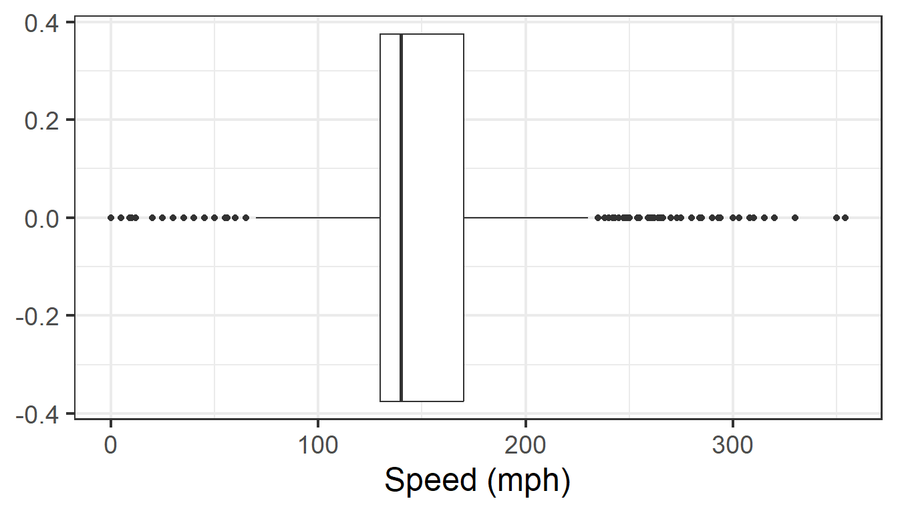

.
Lessons
- Overview of EDA
- Examining numerical data
- Considering categorical data
- Centrality and variability
- Amounts and proportions
- Comparisons
- Trends
Lesson 1: What is EDA?
EDA: an introduction
EDA is an iterative cycle that helps you understand what your data says. It involves:
- Generate questions about your data
- Search for answers by visualizing, transforming, and modeling your data
- Use what you learn to refine your questions and/or generate new questions
EDA: an introduction
Your goal during EDA is to develop an understanding of your data.
“Far better an approximate answer to the right question, which is often vague, than an exact answer to the wrong question, which can always be made precise.” — John Tukey
EDA: two useful questions
There is no rule about which questions you should ask to guide your research. However, two questions are particularly useful:
What type of variation occurs within my variables?
What type of covariation occurs between my variables?
Is EDA a tool for discovery or confirmation?
Discovery
Confirmation
When you begin to explore data, is it better to formulate one or two high-quality questions to ask, or many, many questions to explore?
One or two high-quality questions
Many, many questions
Lesson 2: Examining numerical data
scatter plots

- many borrowers with an income below $100,000
- a handful of borrowers with income above $250,000
scatter plots

- The relationship is nonlinear, as highlighted by the dashed line.
- What implications can you draw from this pattern?
Scatter plots

- Scatter plot of population change against the population before the change.
- A scatter plot of the same data but where the population size has beenlog-transformed.
- What can we infer from these plots?
- Why log transformation is important?
Dot plots

- A dot plot is a one-variable scatterplot; an example using the interest rate of 50 loans above.
- Sometimes two variables are one too many: only one variable may be of interest.
Lesson 2: Centrality and variability
Centrality (aka the “Average” value)
A single number representing the middle of a set of numbers
Mean: \(\frac{\text{Sum of values}}{\text{# of values}}\)
Median: “Middle” value (50% of data above & below)
Mode: Most frequent value (usually for categorical data)
Centrality (aka the “Average” value)
Mean is not the always “best” choice
Variability (“spread”)
Standard deviation: distribution of values relative to the mean
- \(s = \sqrt{\frac{\sum_{i=1}^{N}(x_i - \bar{x})^2}{N - 1}}\)
Interquartile range (IQR): \(Q_3 - Q_1\) (middle 50% of data)
Range: max - min
Variability (“spread”)
Complaints are coming in about orders shipped from warehouse B, so you collect some data.
… here averages are misleading
Variability (“spread”)
Complaints are coming in about orders shipped from warehouse B, so you collect some data:
variability reveals difference in days to ship
days_to_ship |>
pivot_longer(-order, names_to = "warehouse", values_to = "days") |>
group_by(warehouse) |>
summarise(
mean = mean(days),
sd = sd(days),
iqr = IQR(days),
range = max(days) - min(days))# A tibble: 2 × 5
warehouse mean sd iqr range
<chr> <dbl> <dbl> <dbl> <dbl>
1 warehouseA 4.25 0.866 1.25 2
2 warehouseB 4.25 2.70 2.75 9Variability (“spread”)
Outliers
Mean and standard deviation are sensitive to outliers
Outliers: \(Q_1 - 1.5 IQR\) * \(Q_3 + 1.5 IQR\)
Extreme values: \(Q_1 - 3 IQR\) * \(Q_3 + 3 IQR\)
Outliers
Source: Data Science Discovery
Outliers
Robust statistics for continuous data (less sensitive to outliers)
Centrality: use median rather than mean
Variability: use IQR rather than standard deviation
“Visualizing data helps us think”
anscombe |> tibble()
# A tibble: 11 × 8
x1 x2 x3 x4 y1 y2 y3 y4
<dbl> <dbl> <dbl> <dbl> <dbl> <dbl> <dbl> <dbl>
1 10 10 10 8 8.04 9.14 7.46 6.58
2 8 8 8 8 6.95 8.14 6.77 5.76
3 13 13 13 8 7.58 8.74 12.7 7.71
4 9 9 9 8 8.81 8.77 7.11 8.84
5 11 11 11 8 8.33 9.26 7.81 8.47
6 14 14 14 8 9.96 8.1 8.84 7.04
7 6 6 6 8 7.24 6.13 6.08 5.25
8 4 4 4 19 4.26 3.1 5.39 12.5
9 12 12 12 8 10.8 9.13 8.15 5.56
10 7 7 7 8 4.82 7.26 6.42 7.91
11 5 5 5 8 5.68 4.74 5.73 6.89Anscombe’s Quartet
- Stephen Few (2009, p6)
Data types determines how to summarize it
| Nominal (categorical) | Ordinal (categorical | Numerical (continuous) |
|---|---|---|
Measures
|
Measures
|
Measures
|
Charts
|
Charts
|
Charts
|
Summarizing Nominal data
Summarize with counts/ percentages
Summarizing Ordinal data
Summarize: counts/ percentages
wildlife_impacts |>
count(incident_month, sort = TRUE) |>
mutate(percent = n / sum(n))
# A tibble: 12 × 3
incident_month n percent
<dbl> <int> <dbl>
1 9 7980 0.140
2 10 7754 0.136
3 8 7104 0.125
4 5 6161 0.108
5 7 6133 0.108
6 6 4541 0.0797
7 4 4490 0.0788
8 11 4191 0.0736
9 3 2678 0.0470
10 12 2303 0.0404
11 1 1951 0.0342
12 2 1692 0.0297Summarizing continuous data
Histograms:
Skewness
Number of modes
Boxplots:
Outliers
Comparing variablesn

Histogram: Identify Skewness & # of Modes
Summarise:
- Mean, median, sd, range, & IQR:
Min. 1st Qu. Median Mean 3rd Qu. Max. NA's
0.0 0.0 50.0 983.8 1000.0 25000.0 18038 Visualize:
- Histogram (identify skewness & modes)
Histogram: Identify Skewness & # of Modes
Height

Speed
Boxplot: Identify outliers
Height
Speed

Histogram and Boxplot
Histogram
- Skewness
- Modes

Boxplot
- Outliers

Econ 148: Analytical and statistical packages for economics 1